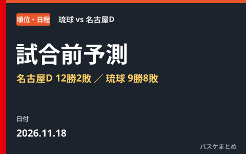

琉球ゴールデンキングス対名古屋Dの試合前予測、首位の名古屋Dが有利

広告スペース（AdSense）
12時に更新：公式インジュアリーリストの掲載状況を追記しました。
11月18日19時05分から、名古屋ダイヤモンドドルフィンズと琉球ゴールデンキングスが対戦します。名古屋Dは12勝2敗、琉球は9勝8敗です。
この記事では、両チームの成績と得失点の数字を比べます。そのうえで試合を予測します。
【事実】現在の成績と順位
名古屋Dは西地区の首位です。琉球は西地区の6位で、首位との差は4.5ゲームです。
| チーム | 成績 | 勝率 | 順位 | 総得点 | 総失点 | 得失点差 |
|---|---|---|---|---|---|---|
| 名古屋ダイヤモンドドルフィンズ | 12勝2敗 | .857 | 西地区1位 | 1277 | 1102 | +175 |
| 琉球ゴールデンキングス | 9勝8敗 | .529 | 西地区6位 | 1437 | 1402 | +35 |
今季ここまでの試合に、この2チームの直接対決はありません。
【事実】直近5試合の結果
名古屋Dは直近5試合で3勝2敗です。11月9日の群馬戦で今季初黒星を喫し、15日には東京SRに73-105で大敗しました。
| 日付 | 名古屋Dの結果 |
|---|---|
| 11/1 | 滋賀に87-64で勝利 |
| 11/7 | 富山に93-80で勝利 |
| 11/9 | 群馬に76-87で敗戦 |
| 11/13 | 秋田に110-94で勝利 |
| 11/15 | 東京SRに73-105で敗戦 |
琉球は直近5試合で2勝3敗です。11月12日と16日に連勝し、悪い流れを止めました。
| 日付 | 琉球の結果 |
|---|---|
| 11/1 | 三遠に86-96で敗戦 |
| 11/7 | 宇都宮に76-79で敗戦 |
| 11/9 | 茨城に72-80で敗戦 |
| 11/12 | 東京SRに81-78で勝利 |
| 11/16 | 富山に102-96で勝利 |
【事実】公式インジュアリーリスト
琉球はグラント・ジェレットが、右下肢静脈血栓症でインジュアリーリストに載っています。名古屋Dの掲載はありません。
【分析】1試合あたりの得失点差で見る
名古屋Dの得失点差は、1試合平均で+12.5点です。琉球は+2.1点で、差は大きく開いています。
| チーム | 1試合の得点 | 1試合の失点 | 1試合の得失点差 |
|---|---|---|---|
| 名古屋D | 91.2 | 78.7 | +12.5 |
| 琉球 | 84.5 | 82.5 | +2.1 |
名古屋Dは失点の少なさが強みです。1試合平均78.7失点は、琉球の82.5失点より約4点少ない数字です。
琉球は得点力で上回れる試合もあります。直近の富山戦では102点を取りました。
【予測】名古屋Dが有利、琉球の勝機はここ
予測は名古屋Dの勝利です。シーズン全体の得失点差が大きく、勝率も.857と高いためです。
ただし名古屋Dは直近の東京SR戦で105点を失いました。守備が崩れる試合があることは、琉球にとって材料です。
琉球の勝機は、得点を90点前後まで伸ばす展開です。名古屋Dの1試合平均得点は91.2点で、点の取り合いになると差は縮まります。
連勝中の琉球は流れに乗っています。一方で名古屋Dは、15日の大敗から立て直せるかが焦点です。
出典（6件）
広告スペース（AdSense）